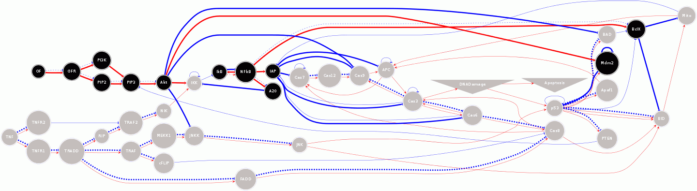

Simulation description: This is a simulation of apoptosis using a discrete/boolean network formalism (BNET ARTIFICIAL_CELL C/NMODL code in bnet.mod). Nodes in the network can be in one of two states (ON,OFF). Each node in the network specifies a molecule/protein/enzyme and each rule specifies an interaction between a set of source nodes and a single target node. The nodes and rules are specified in text files: (names in apopnames.txt; rules in apoprules.txt). The specification is loaded using a python class (bnet) in bnet.py, or using the readnames/readrules functions located there. network.py has a apopnet class for a model of apoptosis that inherits from the bnet class. Nodes in apopnames.txt come in a few forms: input nodes, regular nodes, special nodes. Input nodes have the word "input" after them. These nodes have fixed values for a simulation and provide input to the rest of the network. Regular nodes (one name per line) have their states changed based on the rules described in [1]. Special nodes (DNADamage, Apoptosis) have their states specified based on a special rule that integrates inputs over several iterations of the model. Rules are specified in the following format (see apoprules.txt for examples): SOURCENAMES:SOURCESTATES:WEIGHT -> TARGET SOURCENAMES are the names of source nodes and can be comma-separated when there are multiple source nodes. SOURCESTATES are the states the sources must be in (single or comma-separated ON,OFF). TARGET is the target name. WEIGHT is the activation level that is changed in the target when a rule is turned on. These rules are more fully described in [1]. Instructions:
This simulation was tested/developed on LINUX systems, but may run on Microsoft Windows or Mac OS. To run, you will need the NEURON simulator (available at http://www.neuron.yale.edu) compiled with python enabled. Unzip the contents of the zip file to a new directory. compile the mod files from the command line with: nrnivmodl *.mod That will produce an architecture-dependent folder with a script called special. On 64 bit systems the folder is x86_64. To run the simulation from the command line: ./x86_64/special -python mosinit.py then NEURON will start with the python interpreter and load the mechanisms and simulation. Next, the network and inputs will be setup. Then the simulation will run 40,000 times for 10,000 random initializations of network state and 4 input conditions (all combinations of TNF and GF ON/OFF). Once the simulation has run to completion (a few minutes on an Intel Xeon 2.27 GHz CPU), the output will be displayed in textual format. The output measures how often the network reaches an apoptotic state (apoptosis ratio), in each of the 4 input conditions, under the random initializations to network state. In this model, GF represents a growth factor (pro-survival) and TNF represents tumor necrosis factor (pro-apoptotic). The output will have values similar to these ([1]): TNF: 0 GF: 0 apop ratio: 0.4733 TNF: 0 GF: 1 apop ratio: 0.4679 TNF: 1 GF: 0 apop ratio: 0.9715 TNF: 1 GF: 1 apop ratio: 0.6398 Visualization of network state: The software provided makes use of the Graphviz and ImageMagick software packages (if they are already installed) to draw the network state over time, as an animated gif. An example of how to do this in a simulation loop is in the myanim function in network.py . myanim also requires a directory to store the individual frames in. This directory should be called frames, and be present in the current working directory. A temporary file, __junk__.dot will be written to as well. An example rendering of a network and its state is provided here:  In this rendering, regular (special) nodes are drawn with circles (triangles) with the name of the node indicated. Color represents node state (off:gray, on:black). Solid (dotted) lines represent that a source node must be ON (OFF) to activate the rule. Lines indicate interaction rules (red:activating; blue:inhibiting). Thick (thin) lines indicate a currently active (inactive) rule. References: This simulation is based on the article: [1] Boolean network-based analysis of the apoptosis network: Irreversible apoptosis and stable surviving Journal of Theoretical Biology volume 259, pages 760-769. by Mai Z and Liu, H (2009). For questions/comments email: samuel dot neymotin at yale dot edu or samn at neurosim dot downstate dot edu Changelog: 20160920 This updated version from the Lytton lab allows this model to run on the mac. 20220523 Updated MOD files to contain valid C++ and be compatible with the upcoming versions 8.2 and 9.0 of NEURON.